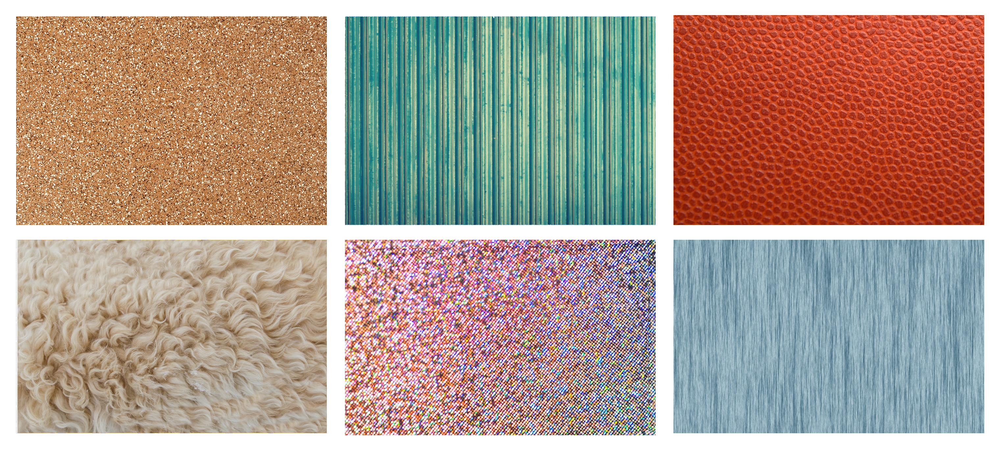

É o aspecto de uma superfície que permite identificá-la e distingui-la de outras formas. Superfícies lisas, macias, onduladas entre outros tipos de texturas, podem ser identificadas pela visão ou pelo tato, sendo assim, a textura é uma sensação visual ou tangível.
